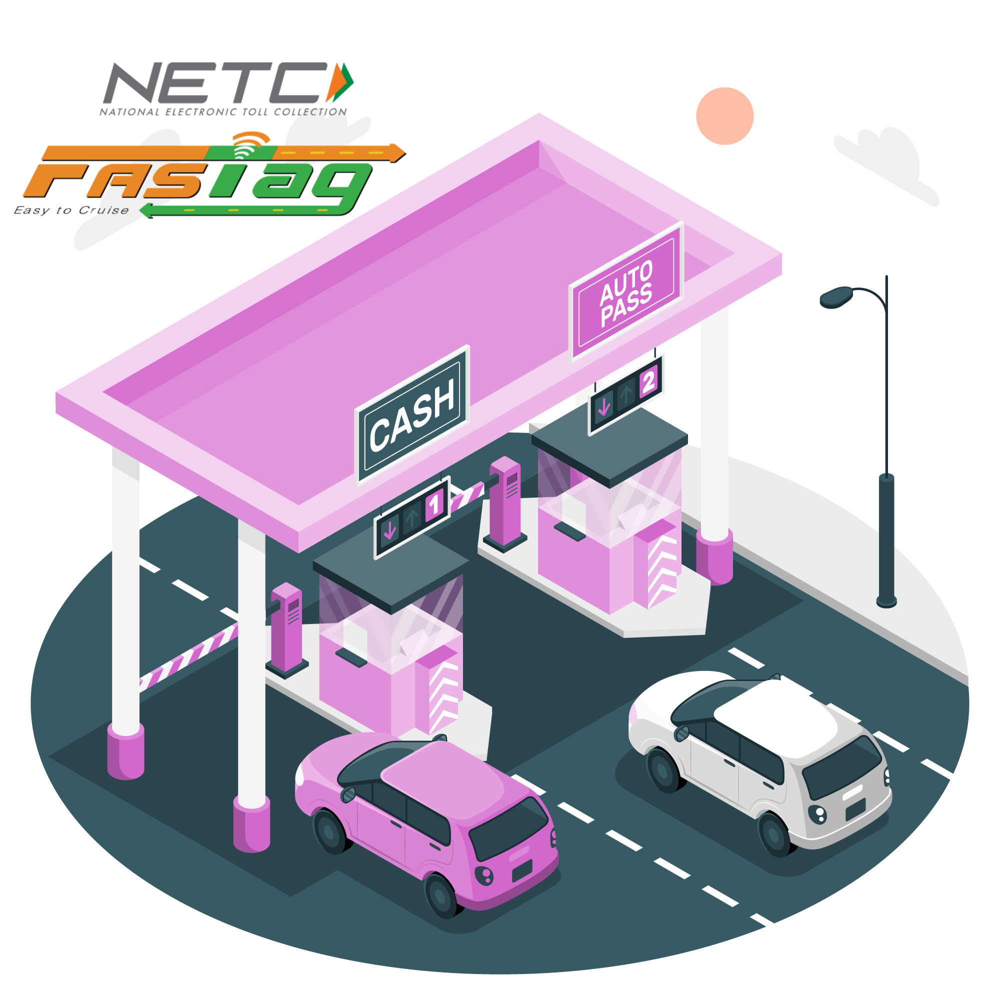

Get Certified With Us
Get your pollution certificate with us

Fastag Available
Apply or top Us fastag With Us !
Get your pollution certificate with us

Apply or top Us fastag With Us !
Does obtaining a PUC Certificate really matter?
The greatest threat to humanity is environmental degradation. It has an unsafe mixture of chemicals in it that can impair our respiratory system. But do you believe that pollution can be managed? If so, what steps are you taking to address this? While everyone wants to breathe clean air, nobody seems to care about the state of the ecosystem. Checking for pollution is only a basic duty that everyone should perform. You will be able to determine the extent of your environmental contamination by doing this. The primary factors contributing to the rising levels of environmental pollution include pollutants from factories, automobiles, and the growth of industry. You must be aware of the many forms of pollution, including those found in the air, water, soil, and land, as well as noise pollution. However, among them is air pollution.
Check your Vehicle's PUC status HERE
A PUC certificate: what is it?
The pollution under control certificate certifies that the amount of smoke your car releases into the air does not pose a significant risk to the environment in accordance with pollution control guidelines. The government has approved this certificate following the vehicle's thorough verification. It is an official document that you will need when you renew your auto insurance. Just like it is required to have your driver's license and proof of vehicle registration when driving, a PUC certificate is now also required.
What use does a PUC certificate serve?
A PUC certificate is seen by the government as evidence that your car has minimal emissions and does not harm the environment. It enables you to drive your car on public roads lawfully. Upon passing the PUC Test, this certificate is awarded. Each automobile operating in India has to have a current Pollution Under Control certificate.
What is a PUC certificate's validity?
The certificate is good for six months after which time you'll need to get another one. After completing the PUC exam, a certificate is awarded, and the test's validity requirements are determined by reading it. However, the validity period is for a full year if you have bought a new car. One year later, a PUC exam would be necessary.
What is contained in a PUC certificate?
Following PUC certificate has various benefits.